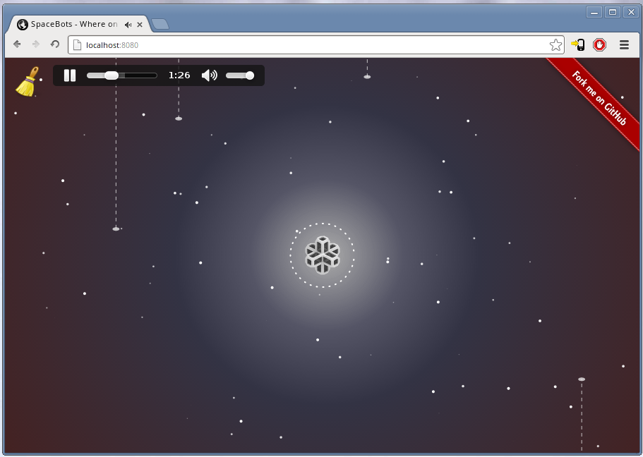
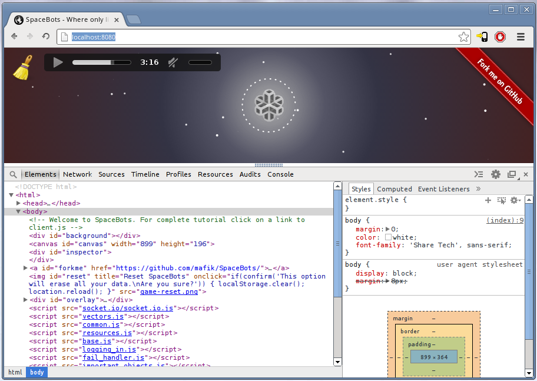
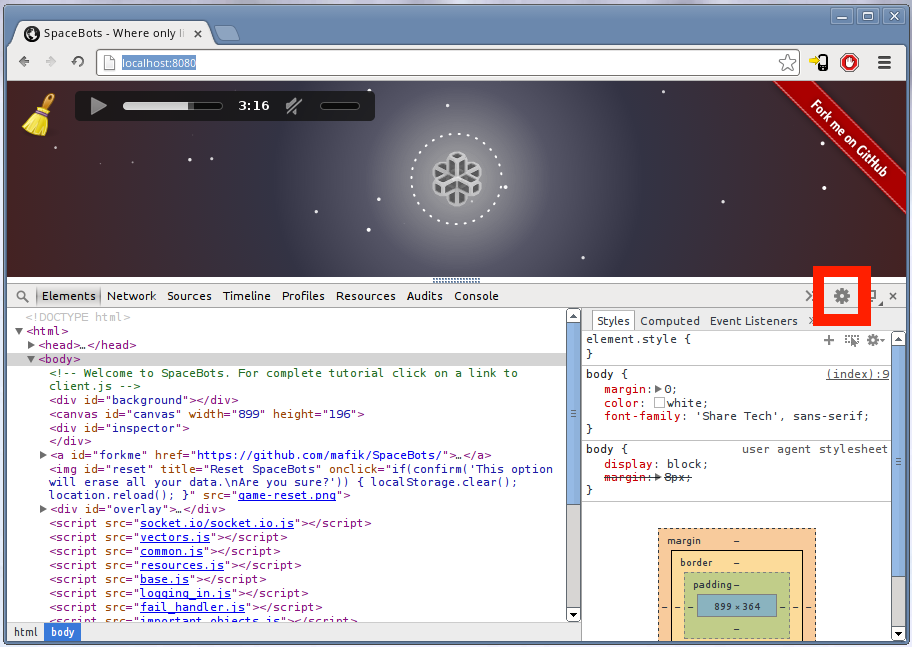
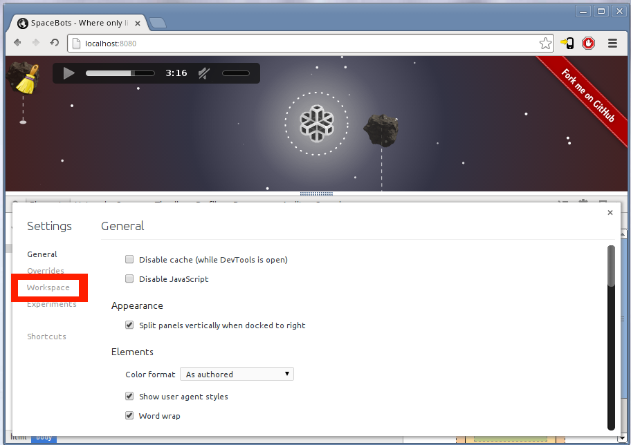
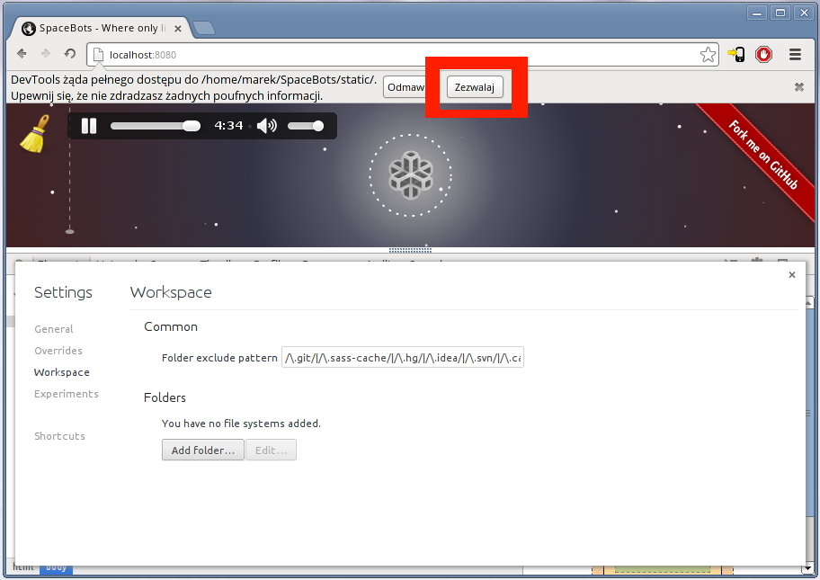
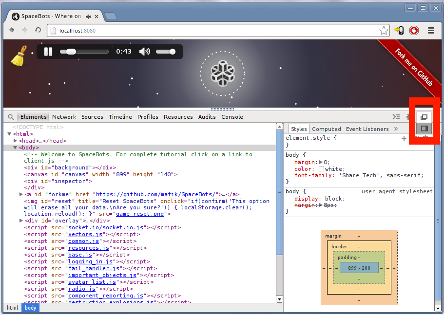
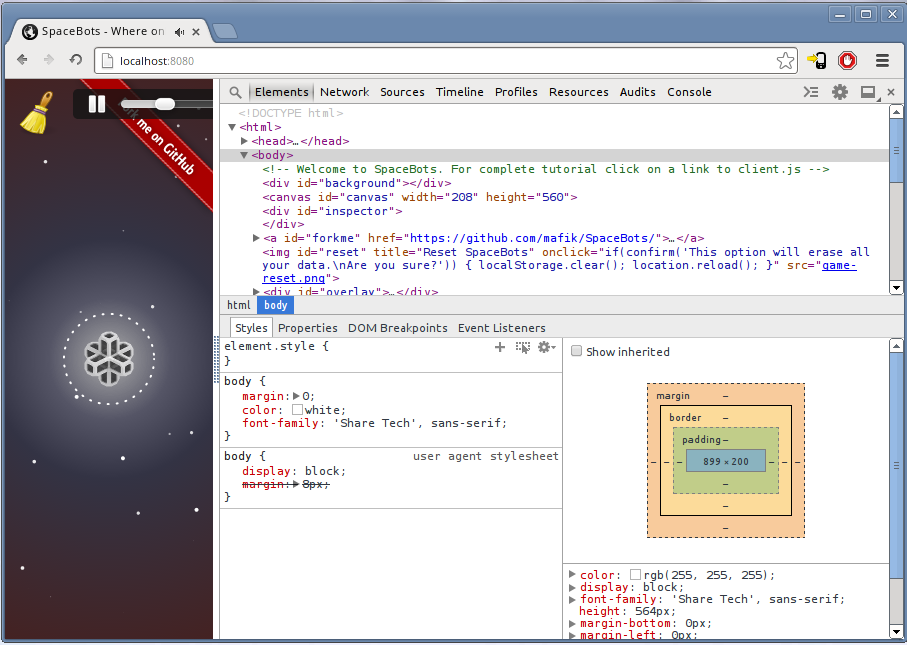
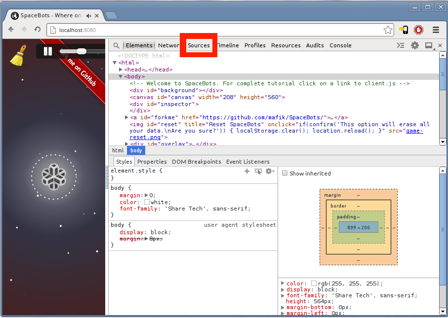

SpaceBots to gra, w której stworzona przez ciebie sztuczna inteligencja będzie walczyć z innymi graczami o rzadkie zasoby, lepsze podzespoły oraz nowe technologie.
Do kodowania będziesz potrzebować najnowszej przeglądarki. Pobierz Google Chrome w najnowszej wersji, czyli tzw. kanarka albo nieco stabilniejszą wersję beta.
Pewnie widziałeś/aś już stronę SpaceBots. Tej oficjalnej nie możesz jednak w wygodny sposób edytować. Pobierz kod SpaceBots, rozpakuj go, wejdź do katalogu SpaceBots/static/ i uruchom server.exe. Od teraz na twoim komputerze działa serwer http, który pozwoli ci grać w SpaceBots. Możesz na niego wejść przez http://localhost:8080/.
Powinien wyglądać mniej więcej tak:
Tak naprawdę łączysz się z oficjalnym serwerem SpaceBots, ale przez to, że kod strony jest teraz na twoim komputerze, możesz pisać własne skrypty oraz modyfikować te wbudowane. Zacznij od wciśnięcia F12. Powinny otworzyć się tzw. DevToolsy:
Jeśli teraz cokolwiek wyedytujesz, wszystkie zmiany pójdą w zapomnienie po odświeżeniu strony. Żeby Chrome zapisał zmiany, musisz poinformować go, gdzie znajdują się pliki strony.
Kliknij na ikonę koła zębatego:
Potem wybierz Workspace:
Teraz kliknij Add folder... i dodaj katalog SpaceBots/static/:
Potwierdź w przeglądarce, że zezwalasz na modyfikację tego katalogu:
Z listy na dole wybierz nowo dodany katalog i kliknij w Edit.... W okienku pod tytułem Edit file system, w polu URL prefix wpisz http://localhost:8080/, a w polu /. Gdy skończysz wciśnij enter:
Zamknij okiena ustawień tak żeby wrócić to takiego ekranu:
Od teraz możesz edytować kod strony bezpośrednio w Chrome. Zanim weźmiemy się za edycję ustaw jeszcze okno DevToolsów w wygodniejszej pozycji. Przytrzymaj przycisk pozycji i wybierz podział pionowy:
Okienko przeskoczy na bok:
Zakładka Elements, w której się znajdujesz pokazuje drzewo elementów HTML. Może wygląda jak plik .html strony, ale teraz ten kod żyje w pamięci przeglądarki jako sieć komunikujących się obiektów. Nie można go przez to edytować. Żeby to zrobić, przejdź do zakładki Sources.
Po przejściu, wciśnij Ctrl + O i strzałkami wybierz plik index.html. Możesz wpisać kilka znaków z jego nazwy żeby szybciej do niego dotrzeć. To jego załadowaniu dostaniesz możliwość jego edycji:
Teraz edytując stronę możesz spokojnie usunąć lub zmodyfikować elementy strony. Zlokalizuj w kodzie i usuń elementy odpowiedzialne za:
Możesz edytować też kod CSS. Usuń style elementów, których już nie ma na stronie oraz wyedytuj pozycję miotełki tak żeby znalazła się bliżej krawędzi ekranu.
Kiedy skończysz, zapisz zmiany Ctrl + S i odśwież stronę.
Za pomocą DevToolsów, w katalogu /static utwórz nowy plik - bot.js. Umieść w nim jakieś testowe polecenie - na przykład console.log("bot.js się zgłasza");. Dodaj znacznik <script> do strony tak, żeby bot.js załadował się przy starcie i odśwież stronę. W konsoli zobaczysz, że nowo dodany skrypt zadziałał.
Poczytaj kod gry. Na końcu pliku index.html znajduje się cała seria skryptów. Możesz je otworzyć i modyfikować tak samo jak w przypadku index.html - za pomocą Ctrl + O i Ctrl + S. Skrypty SpaceBots są wyjątkowo dobrze udokumentowane i nie będziesz mieć z nimi żadnych problemów. Zacznij od skryptu logging_in.js i po kolei przeglądaj kolejne - jest w nich cała masa funkcji, z których będziesz korzystać we własnych skryptach. W ten sposób dowiesz się też jak zbudowany jest domyślny klient gry. Twoim następnym celem jest oczywiście jego modyfikacja.
Jeśli chcesz dowiedzieć się więcej o obsłudze DevToolsów, możesz skorzystać z tych stron:
Grając w SpaceBotsy będziesz programować w języku JavaScript. Jeśli go znasz, przejdź do rozdziału z opisem mechaniki SpaceBots. Jeśli nie, na kolejnych stronach będziesz mógł go poznać.
Nie musisz go czytać w całości i spokojnie możesz robić to równolegle z poznawaniem SpaceBots. Musisz go jednak przeczytać i wyjdzie ci na zdrowie jeśli zrobisz to wcześniej niż później.